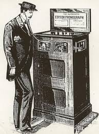
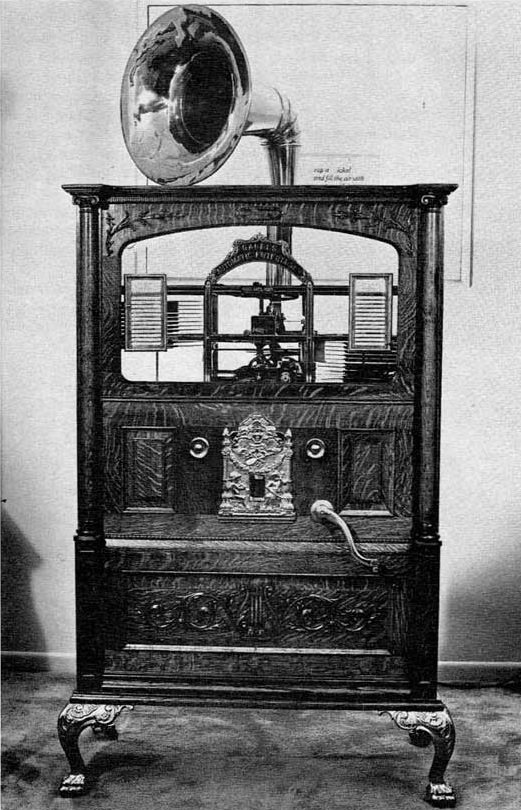
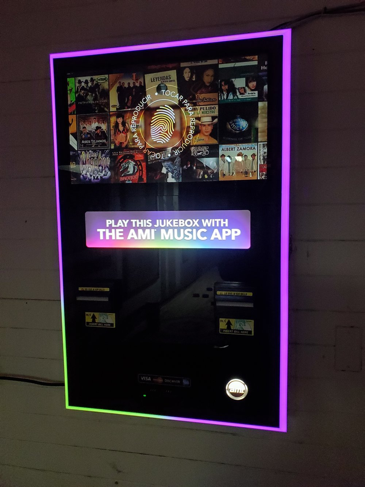

 Um dos primeiros precursores da jukebox moderna foi a máquina caça-níqueis. Em 1889, Louis Glass e William S. Arnold colocaram um fonógrafo cilíndrico Edison operado por moedas no Palais Royale Saloon em San Francisco. Era um Fonógrafo Elétrico Edison Classe M em um gabinete de carvalho que foi reformado com um mecanismo de moedas patenteado por Glass e Arnold. Este foi o primeiro níquel na fenda. A máquina não tinha amplificação e os clientes tinham que ouvir a música usando um dos quatro tubos de escuta. Em seu primeiro ano a máquina foi um sucesso que fez Glass e Arnold chegarem a afirmar que suas máquinas renderam mais de 4.000 doláres, levando assim que mais pessoas entrassem no negócio de fabricação e plantação de fonógrafos em locais públicos em todos os EUA. Albert K. Keller foi o primeiro a realmente ter sucesso em lucrar com fonógrafos que operavam com moedas, mas foi rapidamente seguido e ultrapassado por outros fabricantes, incluindo os “Big Four” - AMI, Seeburg, Wurlitzer e Rock-Ola.
 Em sua história inicial a jukebox viu várias inovações no design de "fonógrafo operado por moeda" em rápida sucessão como: A invensão de Emile Berliner que pavimentou o caminho para o processo de transição de fonógrafos baseados em cilíndros para fonógrafos baseados em discos de disco quando ele fez o marketing de seu gramofone na década de 1890. A invensão de John Gabel Manufacturing Company que produziu o primeiro fonógrafo automático multisseleção operado por moeda em 1906, que era conhecido como "Automatic Entertainer", que tinha 24 canções para os clientes escolherem. O desenvolvimento do primeiro amplificador valvulado eletrônico criado no Bell Labs em 1916 permitindo que o primeiro alto-falante elétrico comercial fosse fabricado em 1924, sendo assim, era possivel a substituição ods métodos acústicos anteriores dos fonógrafos por meio de tubos de escuta e cornetas. A criação em 1927, pela AMI, do primeiro sistema fonográfico capaz de tocar os dois lados de um disco, que fez uma evolução que imediatamente dobrou o número de músicas disponíveis para os clientes.

Quando o rádio se tornou uma fonte alternativa de entretenimento "gratuito" na década de 1920, as vendas de discos e com elas, as vendas de fonógrafos operados por moedas sofreram um sério golpe. Além disso, a Grande Depressão chegou na década de 1930, acrescentando danos suficientes às vendas para quase eliminar as gravadoras completamente. No entanto, o final da década de 1930 viu um aumento dramático nas vendas de discos e jukeboxes; as pessoas sobreviveram à crise financeira e queriam “viver” novamente. Essa recuperação nas vendas rapidamente transformou a jukebox em uma moda que a tornaria um ícone cultural nas décadas seguintes. A indústria de jukebox estava prestes a entrar em sua Idade de Ouro.
Nela divesas inovações chegaram como a provida pela Seeburg Corporation que lançou uma jukebox de disco de vinil de 45 rpm em 1950, que eram menores e mais leves, então se tornaram a principal mídia de jukebox da última metade do século XX. CDs, 33⅓-RPM e vídeos em DVDs foram introduzidos e usados nas últimas décadas do século. Os downloads de MP3 e os reprodutores de mídia conectados à Internet surgiram no século 21.